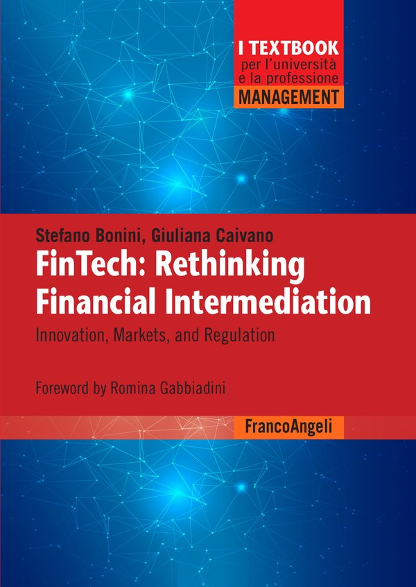
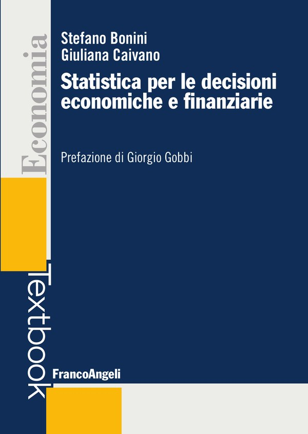

Stefano Bonini, PhD
Italian economist and risk advisor specialising in credit risk and FinTech
Author of two books (FrancoAngeli, 2026) · Research in Economics Letters, Finance Research Letters and European Journal of Finance
Stefano Bonini is an Italian finance academic and practitioner specialising in credit risk modelling and FinTech. He teaches FinTech at the University of Bologna, Innovation in Banking and Financial Markets at the University of Florence, and Financial Risk Management at LUMSA University. He also teaches Credit Risk at the POLIMI Graduate School of Management (Milan).
He is Partner and Head of Risk Advisory at MBS Consulting, after a decade as head of the Credit Risk & Risk Governance practice at Accenture. Earlier he worked at Deloitte Consulting and Prometeia.
His research covers credit risk modelling, A-IRB models, climate risk, machine learning, and FinTech. He holds a PhD (cum laude) from the University of Rome Tor Vergata.
Books

FinTech: Rethinking Financial Intermediation
FinTech is often described as the application of technology to finance; this book argues that it is about rethinking financial services starting from users' needs, with technology as the enabler. Across twelve chapters it covers digital payments, digital lending, credit risk modelling and decision systems, blockchain and crypto-assets, wealth management, supply chain finance and sustainable finance, concluding with AI governance under the AI Act and digital operational resilience under DORA, with case studies from European banking portfolios. Foreword by Romina Gabbiadini (Bank of Italy).

Statistica per le decisioni economiche e finanziarie
A reference text that turns statistics into a practical tool for economic and financial decisions, written as a companion for students, researchers, professionals, economic journalists and managers who need to analyse data and solve complex problems. Foreword by Giorgio Gobbi (Bank of Italy).
Selected research
- Systematic forecast errors from extreme weather events in credit risk models. Economics Letters, 2026. doi:10.1016/j.econlet.2026.113149
- Why Publish in Top Journals? Publication Incentives and Binary Classification in Finance, Economics and Business. Finance Research Letters, 2026. doi:10.1016/j.frl.2026.110406
- Artificial Intelligence: the Application of Machine Learning and Predictive Analytics in Credit Risk. Risk Management Magazine, 2021. doi:10.47473/2020rmm0081
- Probability of Default Modeling: A Machine Learning Approach. Book chapter, Springer, 2018. doi:10.1007/978-3-319-89824-7_32
- Estimating loss-given default through advanced credibility theory. European Journal of Finance, 2016. doi:10.1080/1351847X.2013.870918
- The survival analysis approach in basel II credit risk management: Modeling danger rates in the loss given default parameter. Journal of Credit Risk, 2013. doi:10.21314/JCR.2013.155
Teaching
Current
- University of Bologna – FinTech; Economics of Financial Intermediaries
- University of Florence – Innovation in Banking and Financial Markets
- LUMSA University, Rome – Financial Risk Management; course compliant with the AIFIRM Syllabus (Italian Association of Financial Industry Risk Managers)
- POLIMI Graduate School of Management (Milan) – Credit Risk
Previous
- University of Milan – FinTech Industry
- Bologna Business School – Financial Markets and Instruments
Visiting positions
- NYU Stern School of Business – Visiting Scholar
- IMT School for Advanced Studies Lucca – Visiting Professor
- Université Côte d'Azur – Visiting Lecturer
- University of Barcelona – Visiting Lecturer
- Amsterdam University of Applied Sciences – Visiting Lecturer
- Catholic University Our Lady of Good Counsel, Tirana – Visiting Lecturer
Speaking
Academic conferences
- · AI in Banking, University of Florence
- · Conference on Contemporary Financial Research in a Transforming World, Institute of European Finance, Bangor University (UK)
- · New Frontiers in Credit and Finance, University of Cagliari (session coordinator)
- · Credit Scoring and Credit Control Conference XVII, University of Edinburgh Business School · Finance Research Letters annual conference, University of Valencia
- · Credit Scoring and Credit Control Conference, University of Edinburgh Business School · International Risk Management Conference, Bocconi University, Milan
- · Credit 2018, International Conference on Financial Regulation (with R. C. Merton), University of Venice · European Financial Management Association Meetings, Università Cattolica, Milan · 11th International Risk Management Conference, EM Lyon Business School and University of Paris · 8th International Conference on Mathematical and Statistical Methods for Finance, Universidad Carlos III de Madrid
Earlier (2010–2017)
- · International Risk Management Conference, Florence
- · 15th International Conference on Credit Risk Evaluation, University of Venice · 7th International Conference on Mathematical and Statistical Methods for Finance, Université Paris-Dauphine · 1st International Conference on Risk Management, University of Turin
- · XIV Credit Scoring and Credit Control Conference, University of Edinburgh Business School · 32nd International Symposium on Money, Banking and Finance, Université Nice Sophia Antipolis
- · 4th Financial Engineering and Banking Society (FEBS) Conference, University of Surrey · 6th International Conference on Mathematical and Statistical Methods for Finance, University of Salerno
- · XIII Credit Scoring and Credit Control Conference, University of Edinburgh Business School · 7th International Finance Conference (IFC7), ISC Paris School of Management
- · 5th International Conference on Mathematical and Statistical Methods for Finance, University of Venice
- · 4th International Conference on Mathematical and Statistical Methods for Finance, University of Salerno · International Conference on Quantitative Methods in Economics, Babeș-Bolyai University · 4th International Conference on Computational and Financial Econometrics, University of London · 6th International Conference on Money, Investment and Risk, Nottingham Business School
Industry and policy events
- · ABI Supervision, Risks & Profitability, Milan (round table) · European Commission, Conference on Sustainable Finance
- · ABI Supervision, Risks & Profitability, Milan · Banca d'Italia, workshop on artificial intelligence for credit risk (invited speaker)
- · Milan Fintech Summit (moderator)
- · ABI Supervision, Risks & Profitability, Milan · RiskMinds International, London · Seamless Europe, Berlin (moderator) · Milan Fintech Summit (moderator) · Global Thinking Foundation, “Libere di… vivere”, Bologna
- · RiskMinds International, Barcelona (invited speaker) · Milan Fintech Summit (moderator)
- · RiskMinds International, Barcelona (invited speaker): “Credit risk & systems: how are our models advancing to the new normal?” · Milan Fintech Summit (moderator)
- · RiskMinds: “Credit risk modelling between FinTech agility and banking experience” · Forum Banca, FinTech Smart Village, Milan
- · ABI Basilea 3 – Supervision, Risks & Profitability, Rome · SAS Forum: New Age of Risk Analytics, Milan
- · RiskMinds International, Amsterdam · ABI Basilea 3 – Risk & Supervision, Rome
Earlier (2015–2017)
- · ABI Basilea 3 – Risk & Supervision, Rome
- · ABI Basilea 3 – Risk & Supervision, Rome
- · ABI Basilea 3 – Risk & Supervision, Rome
Press & media
- Video "Bonini (MBS Consulting): L'AI nei modelli interni crea valore solo se cambiano anche i dati". Video interview at Supervision, Risks & Profitability 2026, Bancaforte (ABI), 13 July 2026. In Italian. Watch
- Video "Bonini (MBS Consulting): Dal rischio all'incertezza, ecco come cambia il ruolo del risk manager". Video interview at Supervision, Risks & Profitability 2025, Bancaforte (ABI), 16 June 2025. In Italian. Watch
- Article "Dmo, definiti i vertici. Michele Luciani alla guida. Nominati due consiglieri". Profile on his appointment to the board of the Fondazione Turismo DMO of Montecatini Terme, by Daniele Bernardini, La Nazione, 21 May 2025. In Italian. Read
- TV TV interview on ECB interest rate decisions, TGR Piazza Affari, Rai 3, 19 September 2024. In Italian. Watch
- TV TV interview on ECB interest rate decisions, TGR Piazza Affari, Rai 3, 13 June 2024. In Italian. Watch
- Article "MBS Consulting (Cerved): operativa una nuova practice dedicata al Risk Advisory". News on the launch of the Risk Advisory practice he co-leads, Bancaforte (ABI), 8 February 2024. In Italian. Read
- Video "Il Fintech non è solo pagamenti". Video interview at the Milan Fintech Summit, askanews (published by il Dolomiti), 11 October 2023. In Italian. Watch
- TV TV interview on FinTech, on the occasion of the Milan Fintech Summit, TGR Piazza Affari, Rai 3, 11 October 2023. In Italian. Watch
- Article Speaker at the Bologna stage of the Global Thinking Foundation "Libere di… vivere" tour on financial education. QN Economia – il Resto del Carlino, 17 April 2023, print edition. In Italian.
- Video "La nuova era del rischio di credito in banca: intervista a Stefano Bonini". Live-streamed interview, 24ORE Business School, 2 November 2022. In Italian. Event page
- Ranking Listed among the "Top 100 FinTech Leaders and Influencers in Italy", compiled by Claudio Bedino (Medium, 26 August 2019) and republished by StartupItalia ("I 100 profili da seguire nel fintech e nell'insurtech italiano", 2019) and Fintechnews Switzerland (19 September 2019). Original list · Fintechnews · StartupItalia
- Article "Il montecatinese che insegna nel dipartimento dei premi Nobel". Profile on his visiting period at NYU Stern School of Business, by Lorenzo Mei, Il Tirreno, 19 August 2019. In Italian. Read
Professional qualifications
- Chartered Accountant, Order of Chartered Accountants of Milan
- Statutory Auditor and qualified Sustainability Auditor
- State Examination in Statistics
- Chartered Statistician (RSS) · Accredited Professional Statistician (ASA)
- Registered Journalist
Education
- PhD in Banking & Finance (cum laude), University of Rome Tor Vergata
- Degree in Mathematical Economics, University of Florence
- Visiting student: University of Birmingham (2001–2002), University of Sussex (2004), Georgetown University (2005), University of Alicante (2006–2007)
Beyond finance
- Chess: FIDE National Arbiter; FIDE National Instructor and Lead School Instructor.
- Magic: member of The Magic Circle (London) and of CLAM (Milan); performs at private and corporate events in Italy and abroad.
Profiles
ORCID Google Scholar SSRN RePEc Scopus Wikidata LinkedIn University of Bologna
Contact
Email: stefano@stefanobonini.eu
LinkedIn: linkedin.com/in/stefanobonini